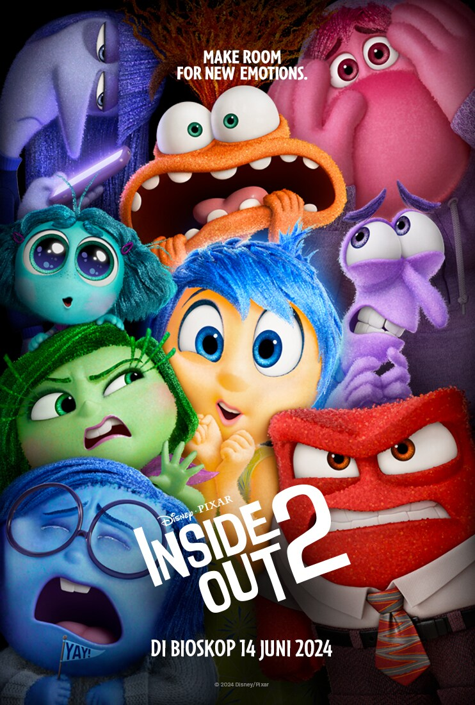

Artikel 1: Judul Artikel

Kutipan inspiratif: "Dalam dunia yang semakin kompetitif ini,
pendidikan bukan hanya sekadar transfer ilmu, tetapi juga sarana untuk membentuk karakter dan
keterampilan. Melalui pendidikan, kita mengembangkan potensi diri, membangun masa depan,
dan mempersiapkan diri untuk tantangan yang lebih besar. Investasi dalam pendidikan adalah investasi
untuk masa depan yang lebih baik."
Artikel 2: Judul Artikel

Kutipan inspiratif: Dalam film *Inside Out 2*, terdapat pesan yang sangat kuat tentang
pentingnya menerima setiap emosi yang kita rasakan. Salah satu kutipan inspiratif yang muncul adalah,
"Saya telah belajar bahwa setiap emosi itu baik," yang mengajarkan kita bahwa tidak ada emosi yang seharusnya dianggap negatif,
karena semuanya memiliki peran dalam membentuk siapa kita. Selain itu, ada juga pesan yang mengatakan, "Kita lebih kuat bersama,"
yang mengingatkan kita bahwa menghadapi tantangan hidup lebih mudah ketika kita bekerja sama dengan emosi kita dan orang-orang di sekitar kita.
Secara keseluruhan, film ini mengajarkan kita untuk tidak menghindari atau menekan perasaan kita, tetapi untuk memahami dan menerimanya,
karena melalui pemahaman tersebut kita bisa tumbuh lebih kuat dan lebih bijaksana.
Ringkasan pengalaman atau refleksi tentang belajar atau bekerja.